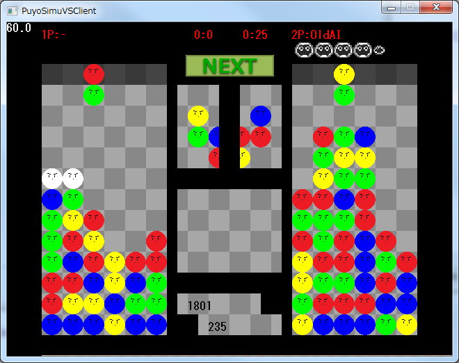

[HOME]
PuyoSimuVS（Client）

通称ぷよたん（？）
オンライン対戦が出来るターン制のぷよぷよです。
とりあえずランダムマッチが出来るようになったので公開。
サーバはrefpuyo.netで動かしているので、clientがあれば対戦出来ます。
また、ローカルでAIと対戦することも出来ます。
操作方法等はそのうち整備します。
完成度：30%くらい
Download（client）
Download（server）
https://github.com/REF3000/PuyoSimuVSClient
https://github.com/REF3000/PuyoSimuVS